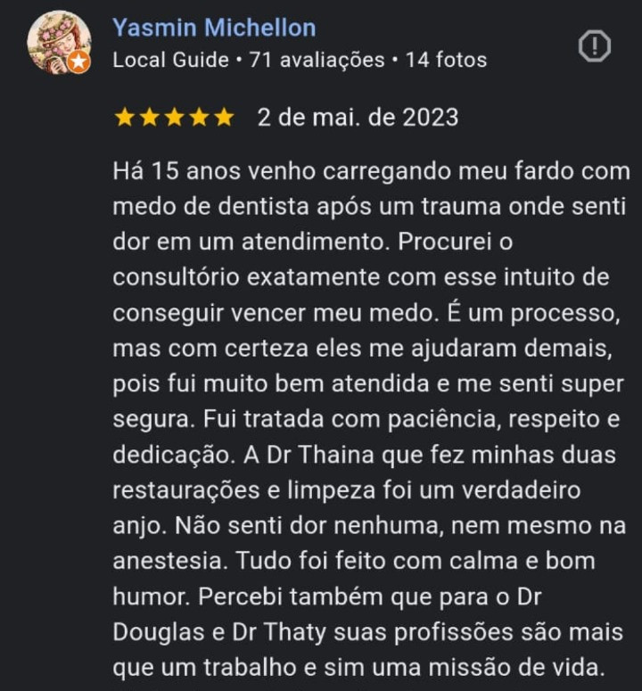

Odontologia Preventiva
Limpeza, avaliação, remoção de tártaro e acompanhamento para evitar tratamentos mais complexos.
Implantes, canal, prótese, estética e prevenção com planejamento claro, acolhimento e foco no conforto do paciente.
Limpeza, avaliação, remoção de tártaro e acompanhamento para evitar tratamentos mais complexos.
Reabilitação oral planejada para devolver mastigação, segurança e naturalidade ao sorriso.
Endodontia com abordagem cuidadosa para aliviar dor, tratar infecções e preservar dentes.
Clareamento, facetas e soluções estéticas com resultado harmônico e planejamento personalizado.

A Yokota Odontologia combina atendimento próximo, explicações claras e tratamentos personalizados para pacientes da Vila Matilde, Tatuapé, Penha, Carrão e região.
Escuta ativa e orientação clara para reduzir ansiedade antes do tratamento.
Cada caso recebe indicação, orçamento e sequência de cuidado sob medida.
Unidade na Vila Matilde, próxima a regiões importantes da Zona Leste.
Avenida Waldemar Carlos Pereira, Vila Matilde, São Paulo - SP
Perto do Metrô Vila Matilde, Tatuapé, Penha e Carrão.
Chamar no WhatsAppEnvie seus dados ou fale direto pelo WhatsApp para consultar horários disponíveis.
WhatsApp: +55 11 94800-7313
Telefone fixo: (11) 4175-2827